# yolo ## **Design of Autonomous Systems** ### csci 6907/4907-Section 86 ### Prof. **Sibin Mohan** --- <!-- .slide: data-background="white" --> cnns work using sliding windows... <p>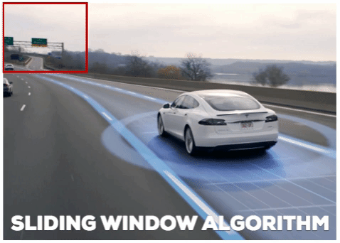</p> --- <!-- .slide: data-background="white" --> cnns work using sliding windows... so what's the **problem** with this? --- what about objects **much larger** or **much smaller**... ...than the window? --- what about objects **much larger** or **much smaller**... ...than the window? <br> also what about **speed** of detection? --- ## enter **yolo** --- ## enter **yolo** ### "_**y**ou **o**nly **l**ook **o**nce_" --- ## enter **yolo** ### "_**y**ou **o**nly **l**ook **o**nce_" <br> **object detection** → richer task than image classification --- ### yolo **object detection** → richer task than image classification --- ### yolo **object detection** → richer task than image classification ||| |:-----|:------| |**what** is it?| predict a **class label**| --- ### yolo **object detection** → richer task than image classification ||| |:-----|:------| |**what** is it?| predict a **class label**| |**where** is it?| predict a **bounding box**| || --- ### yolo **object detection** → richer task than image classification ||| |:-----|:------| |**what** is it?| predict a **class label**| |**where** is it?| predict a **bounding box**| || for an **arbitrary number** of objects --- <!-- .slide: data-background="white" --> <p>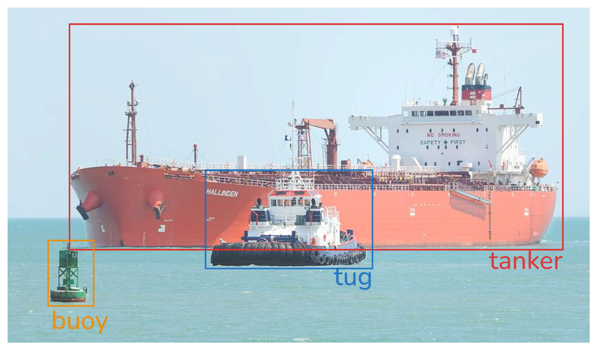</p> --- <!-- .slide: data-background="white" --> each object → **bounding box** (localization) and a **class label** Note: - Object detection output — each object is localised with a bounding box and assigned a class label --- ### Background: Two-Stage Detection --- ### Background: Two-Stage Detection before YOLO → dominant approach was **two-stage**, --- ### Background: Two-Stage Detection before YOLO → dominant approach was **two-stage**, ||| |:-----|:------| |**Stage 1** | generate region proposals → candidate bounding boxes | --- ### Background: Two-Stage Detection before YOLO → dominant approach was **two-stage**, ||| |:-----|:------| |**Stage 1** | generate region proposals → candidate bounding boxes | |**Stage 2** | classify each region proposal independently with a CNN | || --- this pipeline produces **accurate** detections but is **slow** --- this pipeline produces **accurate** detections but is **slow** ||| |:-----|:------| |**R-CNN** (2014)| $\approx 49$ seconds **per image**| --- this pipeline produces **accurate** detections but is **slow** ||| |:-----|:------| |**R-CNN** (2014)| $\approx 49$ seconds **per image**| |**Fast R-CNN** (2015)| $\approx 2$ seconds **per image**| --- this pipeline produces **accurate** detections but is **slow** ||| |:-----|:------| |**R-CNN** (2014)| $\approx 49$ seconds **per image**| |**Fast R-CNN** (2015)| $\approx 2$ seconds **per image**| |**Faster R-CNN** (2016)| $7$ **fps**| || --- this pipeline produces **accurate** detections but is **slow** ||| |:-----|:------| |**R-CNN** (2014)| $\approx 49$ seconds **per image**| |**Fast R-CNN** (2015)| $\approx 2$ seconds **per image**| |**Faster R-CNN** (2016)| $7$ **fps**| || none achieve **real-time** speed ($\geq 30$ fps) --- ### YOLO's Core Insight --- ### YOLO's Core Insight reframes detection as a **single regression problem** --- ### YOLO's Core Insight reframes detection as a **single regression problem** - map image pixels → bounding box and class probabilities --- ### YOLO's Core Insight reframes detection as a **single regression problem** - map image pixels → bounding box and class probabilities - in **one forward pass** --- ### YOLO's Core Insight reframes detection as a **single regression problem** - map image pixels → bounding box and class probabilities - in **one forward pass** <br> <br> single CNN looks at entire image **once** --- ### YOLO's Core Insight reframes detection as a **single regression problem** - map image pixels → bounding box and class probabilities - in **one forward pass** <br> <br> single CNN looks at entire image **once** **You Only Look Once** --- ### Dividing the Image into a **grid** --- ### Dividing the Image into a **grid** YOLO divides input image into an **$S \times S$ grid** of cells --- ### Dividing the Image into a **grid** YOLO divides input image into an **$S \times S$ grid** of cells - original paper → $S = 7$ \[hence, $7 \times 7 = 49$ cell grid\] --- ### Dividing the Image into a **grid** YOLO divides input image into an **$S \times S$ grid** of cells - original paper → $S = 7$ \[hence, $7 \times 7 = 49$ cell grid\] - over a $448 \times 448$ pixel image --- <p>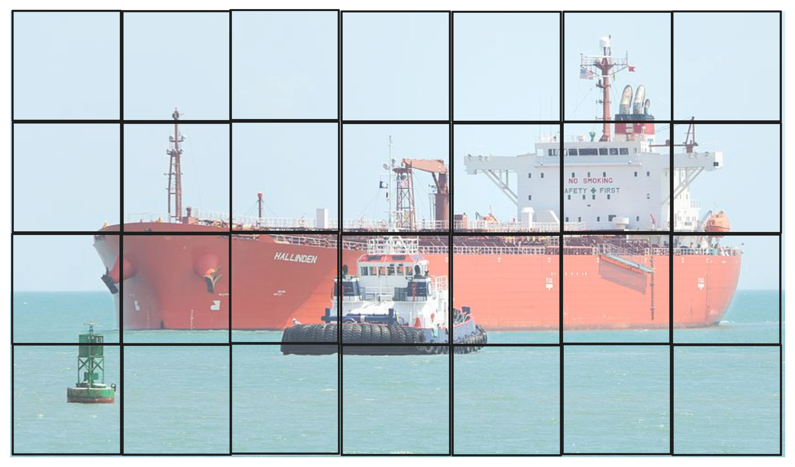</p> --- - image divided into grid $S \times S$ (here, $7 \times 7$) --- - image divided into grid $S \times S$ (here, $7 \times 7$) - each cell → responsible for detecting objects --- - image divided into grid $S \times S$ (here, $7 \times 7$) - each cell → responsible for detecting objects - whose **centre** falls within it --- **responsibility rule** --- **responsibility rule** if **centre** of object's bounding box → falls within cell $(i, j)$ --- **responsibility rule** if **centre** of object's bounding box → falls within cell $(i, j)$ then cell $(i, j)$ → **responsible** for predicting that object --- ### What Each Grid Cell Predicts --- ### What Each Grid Cell Predicts each grid cell predicts **two things**, --- ### What Each Grid Cell Predicts each grid cell predicts **two things**, 1. **Bounding Boxes** 2. **Class Probabilities** --- ### Bounding Boxes --- ### Bounding Boxes - each cell predicts → $B = 2$ bounding boxes --- ### Bounding Boxes - each cell predicts → $B = 2$ bounding boxes - each bounding box parameterised by, $$\text{box} = (x, y, w, h, \text{confidence})$$ --- ### Bounding Boxes $$\text{box} = (x, y, w, h, \text{confidence})$$ | parameter | meaning | values | relative to | |:---:|:---|:----:|----| | $x$ | x-coordinate of box centre | $[0, 1]$ | cell| | $y$ | y-coordinate of box centre | $[0, 1]$ | cell| --- ### Bounding Boxes $$\text{box} = (x, y, w, h, \text{confidence})$$ | parameter | meaning | values | relative to | |:---:|:---|:----:|-----| | $x$ | x-coordinate of box centre | $[0, 1]$ | cell| | $y$ | y-coordinate of box centre | $[0, 1]$ | cell| | $w$ | box width | $[0, 1]$ | full image width| | $h$ | box height | $[0, 1]$ | full image height| Note: Why use $[0, 1]$? There are three primary reasons why researchers prefer normalized values over raw pixels: A. Mathematical StabilityNeural networks generally perform better when inputs and outputs are scaled to a small, consistent range (like 0 to 1 or -1 to 1). If the network had to predict $1242$ for one image and $48$ for another, the gradients would be volatile, making the model incredibly difficult to train. Keeping everything in $[0, 1]$ allows for smoother gradient descent. B. Aspect Ratio IndependenceBy using ratios, the model becomes "resolution agnostic." You can train a model on $640 \times 640$ images and, with some minor adjustments, run inference on $1280 \times 1280$ images. Because the bounding box is "10% of the width," it scales perfectly to any resolution without needing to recalculate the underlying logic. C. The Sigmoid FunctionTo force the network to output values between 0 and 1, YOLO typically applies a Sigmoid Activation Function to the bounding box outputs: --- ### Bounding Boxes $$\text{box} = (x, y, w, h, \text{confidence})$$ | parameter | meaning | values | relative to | |:---:|:---|:----:|-----| | $x$ | x-coordinate of box centre | $[0, 1]$ | cell| | $y$ | y-coordinate of box centre | $[0, 1]$ | cell| | $w$ | box width | $[0, 1]$ | full width| | $h$ | box height | $[0, 1]$ | full height| | confidence | $\Pr(\text{object}) \times \text{IoU}(\text{predicted}, \text{truth})$ | $[0, 1]$ || || --- **confidence score** → how likely is an object in this cell? --- **confidence score** → how likely is an object in this cell? during **training** → compare bounding boxes to **actual ones** --- **confidence score** → how likely is an object in this cell? $$\text{IoU} = \frac{\text{area of } \textbf{intersection} \text{ of bounding boxes}}{\text{area of } \textbf{union} \text{ of bounding boxes}}$$ --- <!-- .slide: data-background="white" --> **confidence score** → how likely is an object in this cell? ||| |----|-----| |$$\text{IoU} = \frac{\text{area of } \textbf{intersection} \text{ of bounding boxes}}{\text{area of } \textbf{union} \text{ of bounding boxes}}$$ | <p>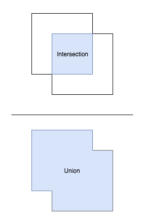</p> | --- <!-- .slide: data-background="white" --> **confidence score** → how likely is an object in this cell? ||| |----|-----| |$$\text{IoU} = \frac{\text{area of } \textbf{intersection} \text{ of bounding boxes}}{\text{area of } \textbf{union} \text{ of bounding boxes}}$$ $$\text{IoU} = \frac{\text{Area(predicted} \cap \text{ground truth)}}{\text{Area(predicted} \cup \text{ground truth)}}$$ | | || --- <!-- .slide: data-background="white" --> **confidence score** → how likely is an object in this cell? ||| |----|-----| |$$\text{IoU} = \frac{\text{area of } \textbf{intersection} \text{ of bounding boxes}}{\text{area of } \textbf{union} \text{ of bounding boxes}}$$ $$\text{IoU} = \frac{\text{Area(predicted} \cap \text{ground truth)}}{\text{Area(predicted} \cup \text{ground truth)}}$$ | | || IoU ranges from **0** (no overlap) to **1** (perfect overlap) --- IoU examples <p>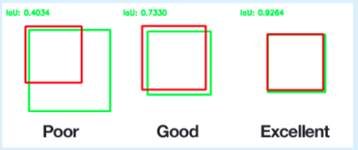</p> --- each grid cell predicts **two things**, 1. Bounding Boxes 2. **Class Probabilities** --- ### Class Probabilities --- ### Class Probabilities each cell also predicts → $C$ conditional class probabilities --- ### Class Probabilities each cell also predicts → $C$ conditional class probabilities $$\Pr(\text{Class}_c \mid \text{Object}), \quad c = 1, \ldots, C$$ --- ### Class Probabilities each cell also predicts → $C$ conditional class probabilities $$\Pr(\text{Class}_c \mid \text{Object}), \quad c = 1, \ldots, C$$ **one** set of class probabilities **per cell** (not per bounding box) --- ### Output Tensor --- ### Output Tensor each grid cell produces, - $B \times 5$ values for bounding boxes - $C$ class probabilities --- complete network output ($S \times S$ grid) → tensor of shape: $$S \times S \times (B \times 5 + C)$$ --- for original paper settings: <br>($S = 7$, $B = 2$, $C = 20$) $$7 \times 7 \times (2 \times 5 + 20) = 7 \times 7 \times 30$$ --- $7 \times 7$ grid each cell produces a **30-dimensional** output vector --- total raw bounding box predictions per image: $$S \times S \times B = 49 \times 2 = 98$$ --- <!-- .slide: data-background="white" --> ### Bounding Box Predictions in Detail <p>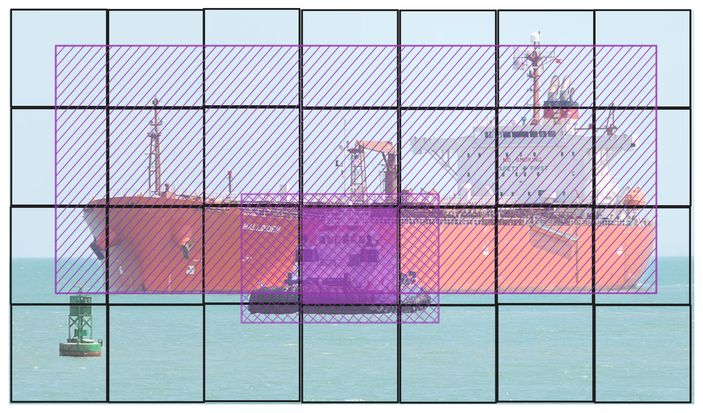</p> --- <!-- .slide: data-background="white" --> <p>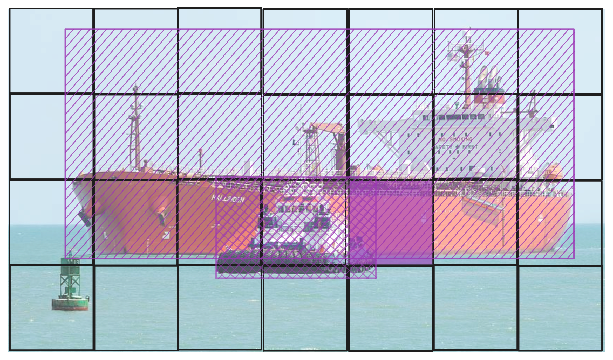</p> - (x,y) is the centre relative to cell - (w,h) are the dimensions relative to full image --- <!-- .slide: data-background="white" --> multiple cells can predict bounding boxes for the **same object**, --- ### Class Probability Maps --- ### Class Probability Maps - each cell's class probabilities - visualised as a **spatial probability map** --- class probability map for "**tanker**", <p>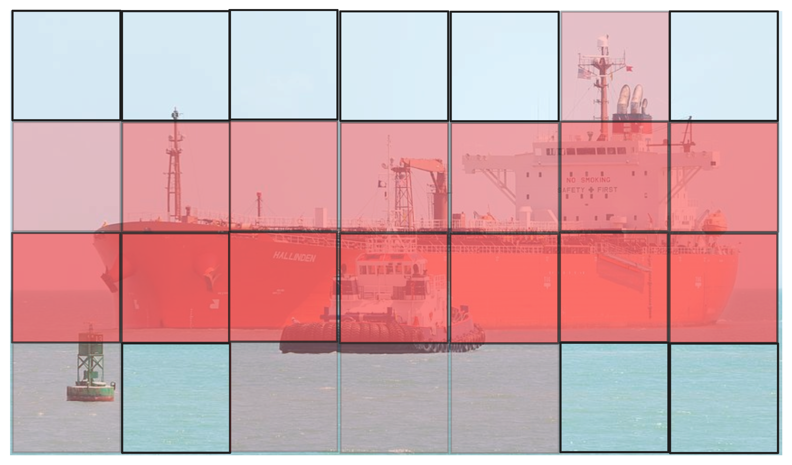</p> --- class probability map for "**tug**", <p>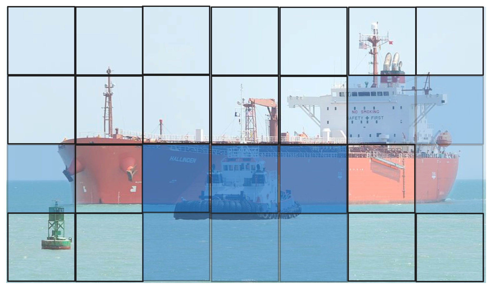</p> --- combined **class probability map**, <p>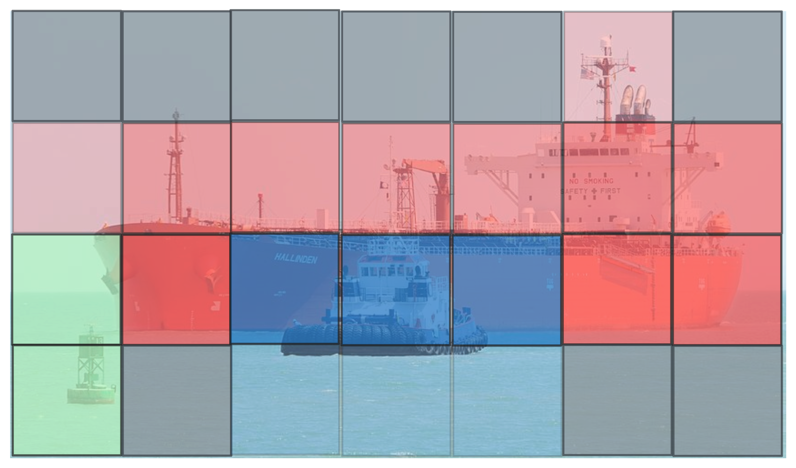</p> --- ### Combining Box and Class Predictions --- ### Combining Box and Class Predictions at test time → class-specific confidence score for box $b$, class $c$: <p>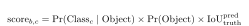</p> --- - combining bounding box confidence scores and - class probabilities --- - combining bounding box confidence scores and - class probabilities <p>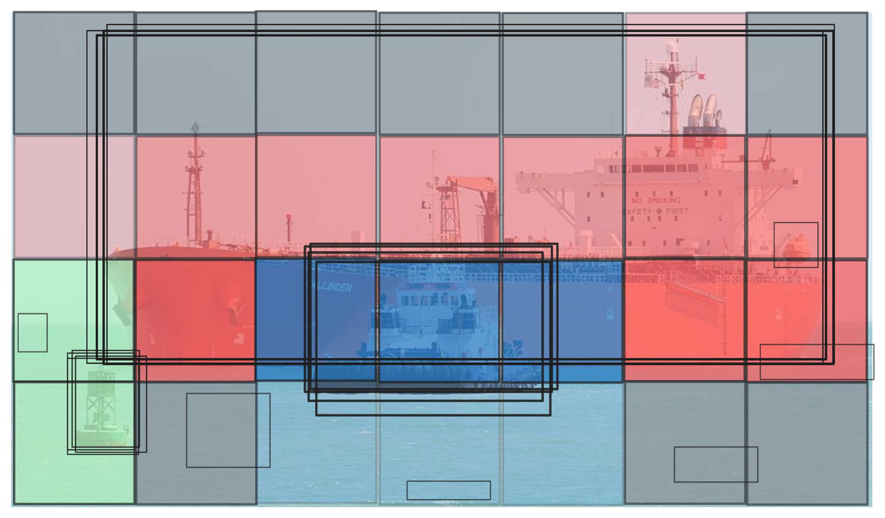</p> to produce **class-specific confidence scores** for each box --- ### Non-Maximum Suppression (NMS) --- ### Non-Maximum Suppression (NMS) after scoring → many boxes refer to the **same object** --- ### Non-Maximum Suppression (NMS) after scoring → many boxes refer to the **same object** NMS **prunes** redundant detections --- ### Non-Maximum Suppression (NMS) 1. collect all boxes with confidence **above threshold** --- ### Non-Maximum Suppression (NMS) 1. collect all boxes with confidence **above threshold** 2. sort boxes by confidence in **descending order** --- ### Non-Maximum Suppression (NMS) 1. collect all boxes with confidence **above threshold** 2. sort boxes by confidence in **descending order** 3. select the **highest-confidence** box --- ### Non-Maximum Suppression (NMS) 1. collect all boxes with confidence **above threshold** 2. sort boxes by confidence in **descending order** 3. select the **highest-confidence** box 4. remove all boxes with $\text{IoU} > 0.5$ relative to selected box --- ### Non-Maximum Suppression (NMS) 1. collect all boxes with confidence **above threshold** 2. sort boxes by confidence in **descending order** 3. select the **highest-confidence** box 4. remove all boxes with $\text{IoU} > 0.5$ relative to selected box 5. **repeat** until no boxes remain --- <!-- .slide: data-background="white" --> so, we start with multiple bounding boxes... <p>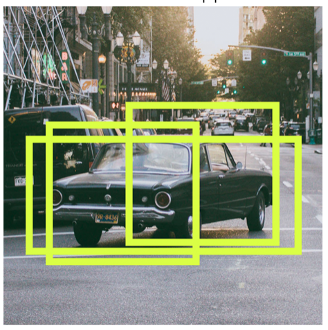</p> --- <!-- .slide: data-background="white" --> ...and end up with **fewer, relevant** ones <p>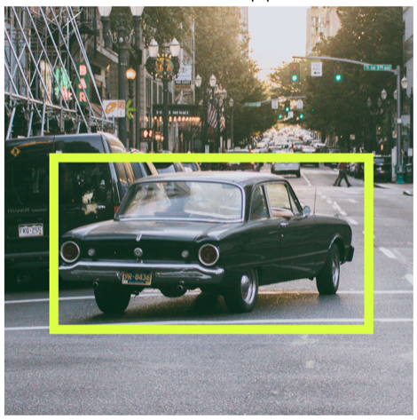</p> --- <!-- .slide: data-background="white" --> going back to our ship example... <p>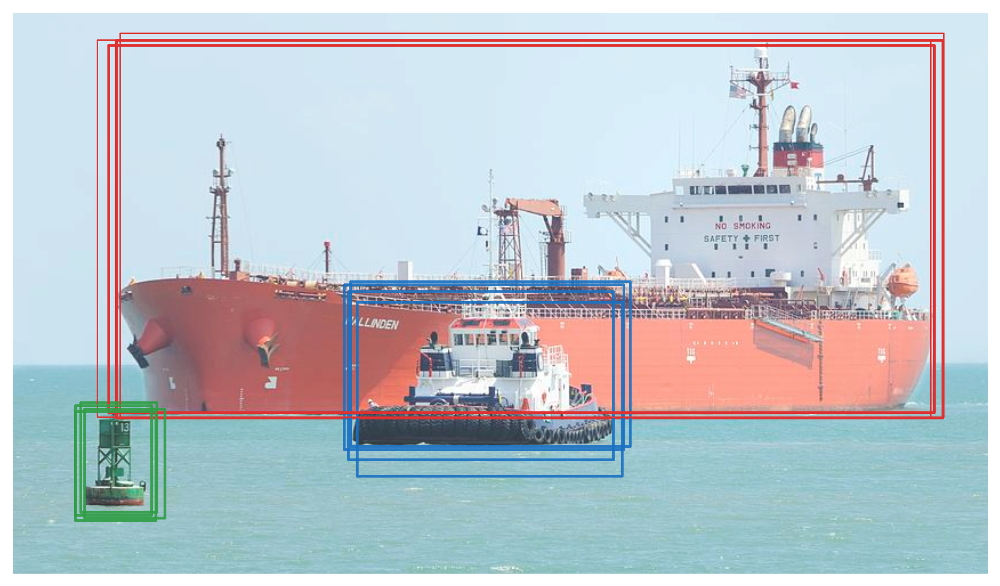</p> --- <!-- .slide: data-background="white" --> going back to our ship example... - NMS **eliminates redundant** overlapping boxes --- <!-- .slide: data-background="white" --> going back to our ship example... - NMS **eliminates redundant** overlapping boxes - keeping only the **best prediction** for each object --- <!-- .slide: data-background="white" --> - NMS **eliminates redundant** overlapping boxes - keeping only the **best prediction** for each object --- <!-- .slide: data-background="white" --> - after NMS → $98$ raw predictions collapse - to a **small number** of high-quality detections --- ### Training: The YOLO Loss Function --- ### Training: The YOLO Loss Function YOLO trained end-to-end with a **multi-part sum-squared error** loss --- ### Training: The YOLO Loss Function <p>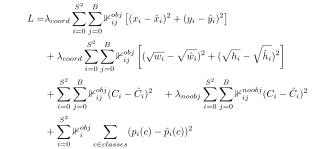</p> --- <p>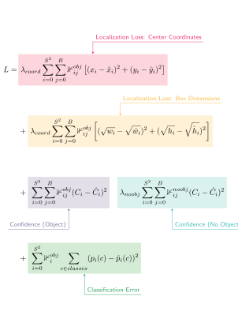</p> --- key design choices in the loss --- key design choices in the loss - $\lambda_{\text{coord}} = 5$ → **upweights** localisation loss --- key design choices in the loss - $\lambda_{\text{coord}} = 5$ → **upweights** localisation loss - $\lambda_{\text{noobj}} = 0.5$ → **downweights** confidence loss for empty cells --- key design choices in the loss - $\lambda_{\text{coord}} = 5$ → **upweights** localisation loss - $\lambda_{\text{noobj}} = 0.5$ → **downweights** confidence loss for empty cells - **square root** of $w$, $h$ → penalize errors in small boxes > large --- ### YOLO Network Architecture --- YOLO v1 architecture --- YOLO v1 architecture - **24 convolutional layers** followed by 2 fully-connected layers --- YOLO v1 architecture - **24 convolutional layers** followed by 2 fully-connected layers - processes images at $448 \times 448$ resolution --- YOLO v1 architecture - **24 convolutional layers** followed by 2 fully-connected layers - processes images at $448 \times 448$ resolution - inspired by GoogLeNet → $1 \times 1$ bottleneck convolutions --- YOLO v1 architecture - **24 convolutional layers** followed by 2 fully-connected layers - processes images at $448 \times 448$ resolution - inspired by GoogLeNet → $1 \times 1$ bottleneck convolutions - final output → $7 \times 7 \times 30$ tensor --- YOLO v1 architecture - **24 convolutional layers** followed by 2 fully-connected layers - processes images at $448 \times 448$ resolution - inspired by GoogLeNet → $1 \times 1$ bottleneck convolutions - final output → $7 \times 7 \times 30$ tensor --- **Fast YOLO** - $9$ convolutional layers --- **Fast YOLO** - $9$ convolutional layers - trading **accuracy** for **speed** --- ### Performance: Speed vs. Accuracy --- ### Performance: Speed vs. Accuracy | model | mAP | speed (fps) | |---|---|---| | R-CNN | $66.0\%$ | $\approx 0.02$ | | Fast R-CNN | $70.0\%$ | $\approx 0.5$ | | Faster R-CNN | $73.2\%$ | $7$ | Note: - mAP stands for Mean Average Precision - It is the primary metric used to score how well an object detection model balances two competing goals: finding all the objects (Recall) and being right when it finds one (Precision). - values are circa 2007 --- ### Performance: Speed vs. Accuracy | model | mAP | speed (fps) | |---|---|---| | R-CNN | $66.0\%$ | $\approx 0.02$ | | Fast R-CNN | $70.0\%$ | $\approx 0.5$ | | Faster R-CNN | $73.2\%$ | $7$ | | **YOLO** | **$63.4\%$** | **45** | --- ### Performance: Speed vs. Accuracy | model | mAP | speed (fps) | |---|---|---| | R-CNN | $66.0\%$ | $\approx 0.02$ | | Fast R-CNN | $70.0\%$ | $\approx 0.5$ | | Faster R-CNN | $73.2\%$ | $7$ | | **YOLO** | **$63.4\%$** | **45** | | **Fast YOLO** | **$52.7\%$** | **155** | || --- YOLO is more than **6× faster** than Faster R-CNN --- YOLO is more than **6× faster** than Faster R-CNN - at **45 fps** → comfortably exceeds real-time threshold (30 fps) --- YOLO is more than **6× faster** than Faster R-CNN - YOLO (**45 fps**) → exceeds real-time threshold (30 fps) - Fast YOLO (**155 fps**) → for high-speed autonomous systems! --- accuracy gap with two-stage detectors comes from, --- accuracy gap with two-stage detectors comes from, - **grid quantisation** → objects at grid boundaries harder to localise --- accuracy gap with two-stage detectors comes from, - **grid quantisation** → objects at grid boundaries harder to localise - **one class set per cell** → cannot detect multiple nearby object types --- accuracy gap with two-stage detectors comes from, - **grid quantisation** → objects at grid boundaries harder to localise - **one class set per cell** → cannot detect multiple nearby object types - **fixed anchor diversity** → limited unusual aspect ratios --- these limitations addressed in later versions, ||| |:-----|:------| |**YOLO v2**| anchor boxes, batch normalisation| |**YOLO v3**| multi-scale predictions| || --- <!-- .slide: data-background="white" --> <p>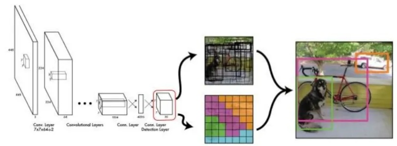</p> --- <!-- .slide: data-background="white" --> <p>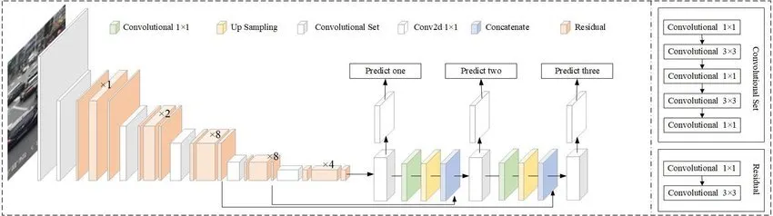</p>